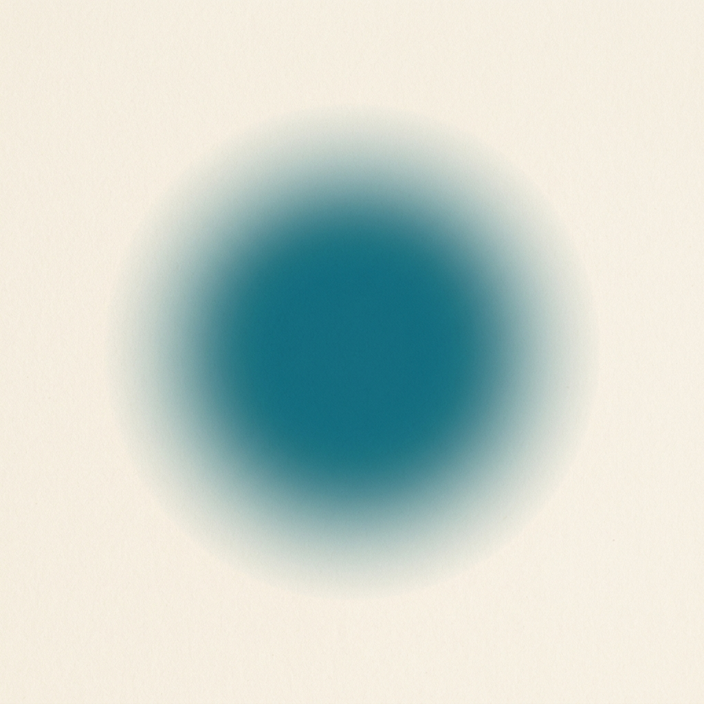
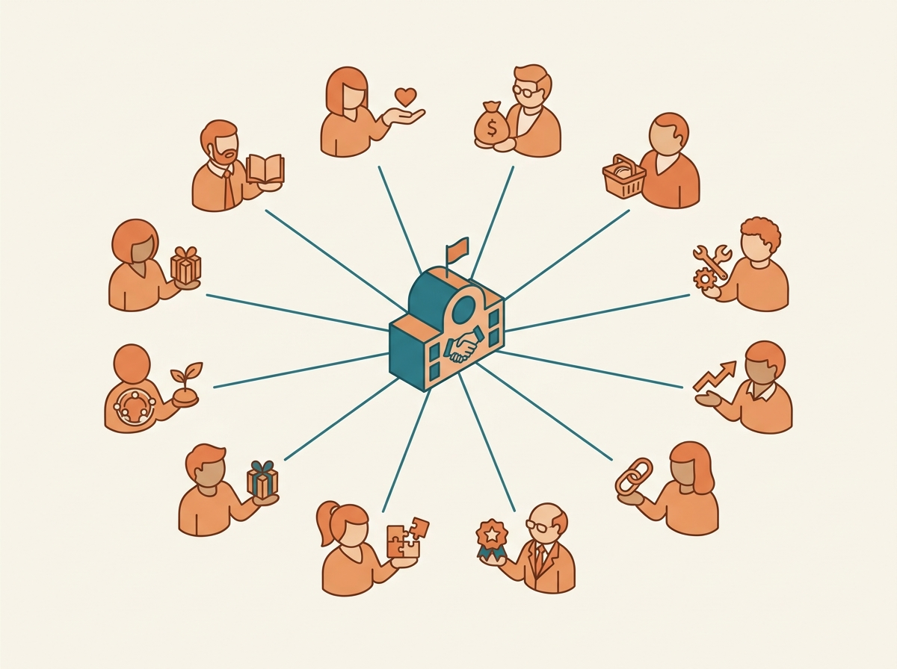

Yさん（48歳 / 女性）
メンバーに紹介を頼むのが、本当に苦痛でした。今は「これ無料で試せるって」と渡せるだけで、関係性が変わった。「夫が初めて、私の活動を肯定してくれた」のが一番うれしかったです。
導入3ヶ月で会員継続率が改善
※個人の感想です ／ ※体験者にはモニター費用支給の場合あり

メンバーに、
「無料の体験案件＋
※「モニター案件」とは、私たちが提携先と事前に交渉し、メンバーが無料または特別価格で体験できる案件のことです。感想・レビューを提出いただいた方には、対象案件ごとに定められたモニター報酬をお渡ししています（金額・支給条件は案件ごとに異なります）。
無料 / 営業電話なし / オンライン30分 / 強引な提案は一切ありません。
メンバーが楽しそうにしているのに、
他のコミュニティに
紹介や勧誘で
メンバーが家族や友人に
会社員時代の
私が抜けたら、
メンバーへの
どれか一つでも当てはまったら、続きを読んでみてください。
これは「あなたが悪い」話ではなく、「仕組みが、まだなかった」話です。
SNSとLINEが普及した今、
「自分が払う会費や時間に対して、
メンバーが冷たくなったのではなく、
伸び悩みは「想いの問題」ではなく、
「仕組みの問題」だったと気づくはずです。
クローズドASP運営事務局が提案する、
Step 01
あなたが、メンバーへ福利厚生として配る。
案件カタログから、コミュニティの色に合う案件を選び、LINEや限定グループで「メンバー特典」として案内するだけ。営業も勧誘も一切なし。「これ、よかったら使ってください」の一言で完了します。
Step 02
メンバーが、「無料体験＋対象案件にはモニター報酬」を実感する。
案件は美容・食・体験ジャンルが中心。メンバーは自分の意思で申し込み、無料または特別価格で体験。対象案件では、感想を共有することで案件ごとのモニター報酬を受け取れます。「このコミュニティに入っててよかった」と感じる瞬間が、自然と増えていきます。
Step 03
メンバーが、自然に紹介・発信する。
「うちのリーダーがこんなの紹介してくれた」とSNSや家族に話す。そこから新しいメンバーが自然に集まる —— あなたが追いかけなくても、コミュニティ側から広がる構造に変わります。
会社が社員に整えるのと同じように、
ご加入いただくと、20件以上の「福利厚生メニュー」がダッシュボードに並びます。
美容・食・体験・学習・健康 —— あなたのコミュニティの色に合うものを選んで、メンバーへ配るだけ。
すべての案件は提携先と事前に交渉済みで、メンバーは無料または特別価格で体験できます。
良い会社が法人向け福利厚生サービスを導入するのと同じ感覚で、あなたのコミュニティ独自の福利厚生カタログを手に入れていただけます。

配布は、いつものLINEや限定グループで完結します。
「今月のメンバー特典です。よかったらどうぞ」の一言で、案内が完了。
ご家族でご利用いただける案件もあるので、メンバーから
「子どもが喜んでくれた」「夫が初めてコミュニティを認めてくれた」という声が届くようになります。
営業トークも、フォローのプレッシャーも、一切不要です。
これまで「紹介してください」と頼んでいた立場から、「私から配らせてください」と言える立場へ —— コミュニティ運営の風景そのものが変わります。
管理画面では、「あなたのコミュニティが、今月いくら還元したか」が一目で分かります。
「メンバー18名が体験 / 還元総額 ¥124,000」のように、配った実績が数字で積み上がっていく仕組みです。
これは、リーダーであるあなた自身の「努力の証明」であり、家族や周囲に「私は、コミュニティのメンバーにこれだけ還元している人です」と胸を張って説明できる、形のある記録になります。
そして、メンバーが他のコミュニティへ流出する理由を、構造的に減らします。
還元され続けるコミュニティから、人は出ていきません。
Yさん（48歳 / 女性）
メンバーに紹介を頼むのが、本当に苦痛でした。今は「これ無料で試せるって」と渡せるだけで、関係性が変わった。「夫が初めて、私の活動を肯定してくれた」のが一番うれしかったです。
導入3ヶ月で会員継続率が改善
※個人の感想です ／ ※体験者にはモニター費用支給の場合あり
Mさん（51歳 / 女性）
「リーダーが配れる仕組み」って、まさにこれだと思いました。家族手当のようなノリで毎月配るだけ。メンバーから「子どもが喜んでくれた」と返ってきた時、仕組みを変えてよかったと思いました。
メンバー紹介が自然発生し新規4名増
※個人の感想です ／ ※体験者にはモニター費用支給の場合あり
Kさん（46歳 / 女性）
「私が抜けたら、誰も何も残らない」が一番こわかった。福利厚生は「私個人ではなく、コミュニティに残る仕組み」。今は胸を張って家族に説明しています。
家族の理解を得て活動継続が安定
※個人の感想です ／ ※体験者にはモニター費用支給の場合あり
朝起きて、まずLINEのリストを見て、「今日は誰に話そう」と探していた日々。
友人にも、ママ友にも、ずっと「お願いします」と言い続ける自分が、だんだん嫌になっていきました。
売上は立つのに、私は「お願いしている人」のままで、なぜか満たされない。
— その違和感の正体に気づいたのは、もう少し後のことです。
長く居てくれたメンバーから、ある日「あなたから取られている気がする」と言われました。
頭が真っ白になった私が、その夜ずっと考えていたのは、
「私は、メンバーに何を還してこれた人なのだろう」ということでした。
会社員時代、毎年の健康診断や提携施設の割引が当たり前にあったように、
自分のコミュニティにも「形のある還元」が必要だったのだと、ようやく言葉になりました。
提携先を一社ずつ自分で開拓し、メンバーに無料で配れる「体験案件」を増やしていきました。
半年経った頃、メンバーから返ってくる言葉が、明らかに変わったのを感じました。
「ありがとう」ではなく、「このコミュニティに入っててよかった」。
数字も静かに動き、退会率が下がり、紹介が自然に発生し始めました。
同時に、家族から「あなたのやってること、ちゃんとした仕事ね」と言われた日のことは、忘れません。
そして気づきました。
これは、私個人ではなく、仕組みとして残せるものだと。
「クローズドASP運営事務局」は、
同じ悩みを抱えるリーダーへ届けるためのプラットフォームです。
判断は今日でなくて構いません。あなたのコミュニティに合う「福利厚生メニュー」が、
どんな形になるのか、まず30分だけ見てみてください。
配布中のモニター案件カタログを、
営業も勧誘もしません。見るだけは、いつでも無料です。
Beauty
エステ、ヘッドスパ、最新フェイシャル、サロン無料体験。
Food
予約困難店のペア招待、高級和食、ホテルアフタヌーンティー。
Experience
話題のホテル、エンタメ体験、家族向け新サービス先行枠。
登録は30秒、見学は0円。
※ 掲載案件は提携先と事前交渉済み。種類・枠数は時期により変動します。一部の案件においては感想・レビュー提出時にモニター費用が支給される場合があります。報酬額・支給条件は案件ごとに異なります。
「クローズドASP運営事務局」は
合わない方には、
自分のコミュニティ・チームを
まだ持っていない方
メンバーへの還元・貢献に
興味がない方
短期的な小遣い稼ぎだけを
探している方
「楽して稼げる」「不労所得」を
期待される方
— クローズドASP運営事務局 代表 坂本 純一
無料 ／ オンライン30分 ／ 公式LINE経由で日程調整 ／ 強引な提案は一切ありません